Temple & Boss (chi tiết)
Mỗi temple có hướng dẫn chi tiết + ảnh minh họa (Zelda Central).
🌬️ Wind Temple (Rito) – Boss: Colgera
Vùng: Hebra. Nhiệm vụ: Tulin of Rito Village. Cần 2 cấp Kháng lạnh (bộ Snowquill).
Đường đến
- Giúp Tulin lấy cung ở Hebra South Summit Cave → Tulin gia nhập, mở năng lực Wind.
- Dùng gust của Tulin khi lướt để vượt khe giữa các đảo nổi.
- Cánh buồm tàu trên ships bật Link lên cao; dùng Ascend khi có trần rắn.
- Kahatanaum Shrine gần đỉnh: kích hoạt trước khi tiếp tục (di chuyển nhanh).
- Rơi qua lối mở ở tâm bão → Stormwind Ark.
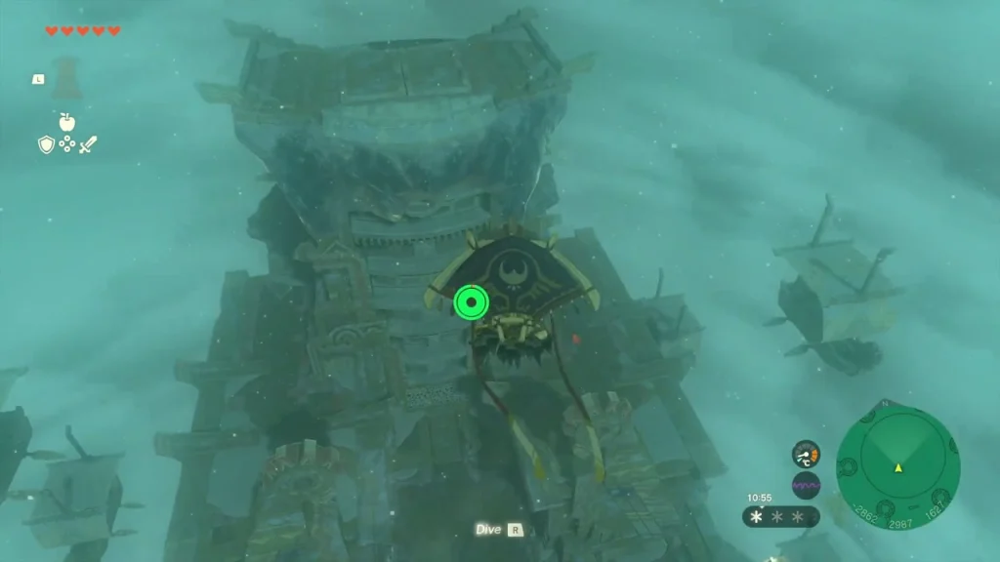
Kích hoạt terminal
- Kích hoạt terminal xanh ở sàn chính → di chuyển nhanh + đánh dấu 5 turbine trên bản đồ. Tab bản đồ: 1F, B1, B2.
5 Turbine
Turbine 1: Sửa cần gạt (1F bow)
Nhặt băng nhũ bằng Ultrahand → gắn vào cần gạt bị gãy → xoay để nâng cổng. Vào trong, đứng gần turbine, dùng gust của Tulin. Phòng bên cạnh: cần gạt tương tự → rương Opal.
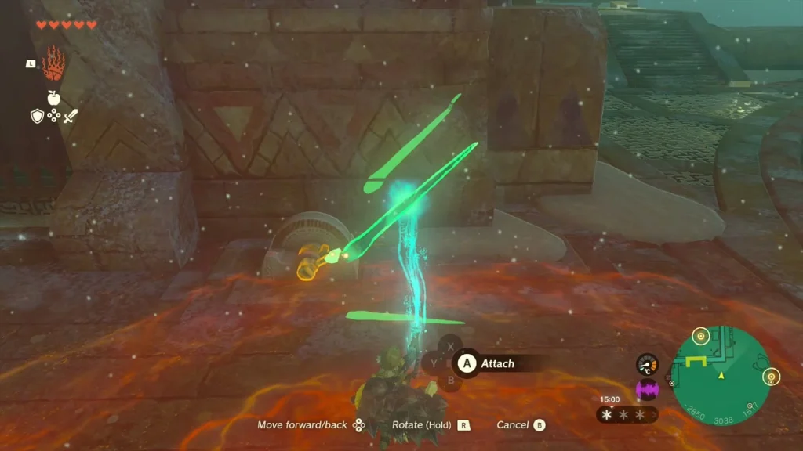
Turbine 2: Rơi qua tháp (1F→B1)
Lướt từ luồng khí trung tâm lên mái cấu trúc cao phía bắc. Mở cửa kim loại bằng Ultrahand, rơi vào giếng. Tránh laser đỏ. Paraglider gần đáy → alcove turbine. Rương Soldier Blade trên gờ.
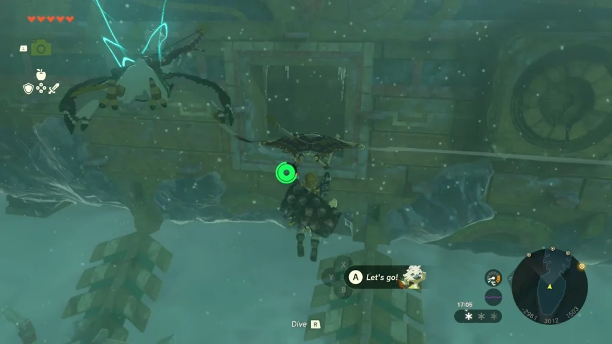
Turbine 3: Bánh xe quay (B1)
Phá băng nhũ chặn lối mở (lửa). Bên trong: bánh xe lớn quay trên khe. Dùng Recall trên bánh xe → đảo chiều quay → đi qua. Phòng tiếp: cần gạt Ultrahand mở thanh; tường 2 bánh răng thiếu connector → bắn hạ băng nhũ lớn, gắn giữa các bánh răng → bánh răng quay → cổng mở → kích hoạt turbine. Rương Sapphire trong cell (kéo qua thanh bằng Ultrahand).
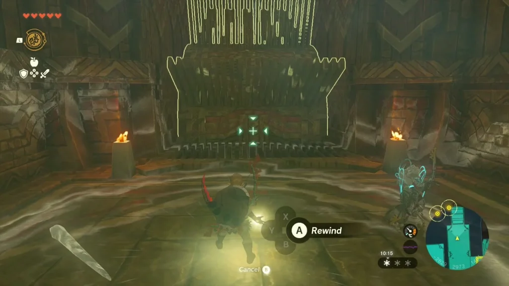
Turbine 4: Phía dưới (B2)
Thang từ B1 xuống B2, theo hành lang đá qua Construct (khối băng ẩn Time Bomb/Portable Pot). Rời cửa sổ, glide dưới vỏ tàu, dùng gust của Tulin vượt đến underside deck. Đánh bại Construct, kích hoạt turbine. Có thể lao thẳng từ sàn chính.
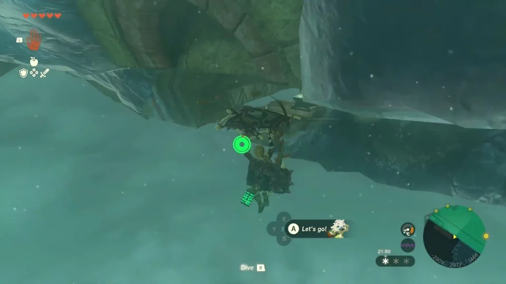
Turbine 5: Quay cột (B1→1F)
Hành lang có laser đỏ + khe bị gãy. Vượt laser (rương Ruby phía sau), vượt khe bằng gust của Tulin, đánh bại Construct, Ascend lên sàn trên. Cột treo trần: gắn phiến đá làm vây, dùng gust của Tulin quay cột → cửa mở. Leo thang nhanh (cửa không giữ lâu). Lên 1F, kích hoạt turbine cuối.
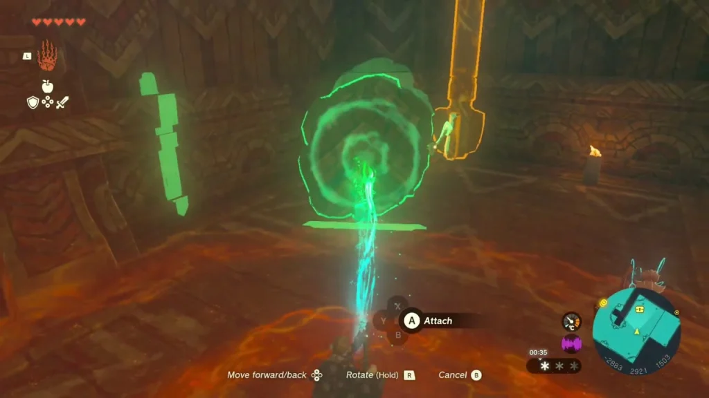
Boss: Colgera
- Điểm yếu = phần tím trên thân, phủ bởi băng.
- Bắn tên từ dưới (khó) hoặc lao từ trên (đóng paraglider khi Colgera lộ băng phía trên sau khi bắn gai).
- Fire Fruit/Bomb Flower phá băng + sát thương 1 phát; Keese Eyeball giúp theo dõi.
- Pha 2: Colgera thêm lốc xoáy. Dùng gust của Tulin né/định vị lại; updrafts lấy lại độ cao.
- Phần thưởng: Heart Container + Vow of Tulin (Wind ability khi lướt). Dọn bão tuyết Hebra.
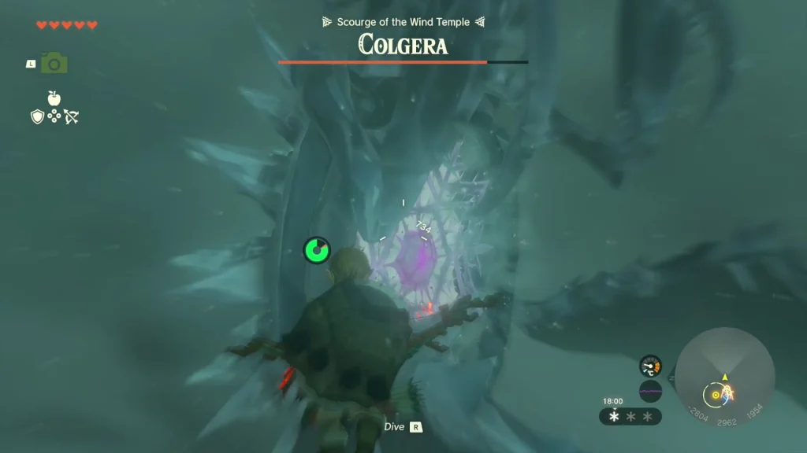
Hướng dẫn đầy đủ (Zelda Central)
🔥 Fire Temple (Goron) – Boss: Marbled Gohma
Vùng: Eldin/Death Mountain. Nhiệm vụ: Yunobo of Goron City. Cần Flame Guard (Flamebreaker armor / Fireproof Elixir).
Đánh bại Moragia & Đến temple
- Moragia: dùng Zonai wing (có steering stick), kích hoạt charge của Yunobo khi approach mỗi đầu. 1 đòn/đầu.
- Lao qua miệng núi lửa → Death Mountain Chasm. Kích hoạt Mustis Lightroot. Theo đường ray mine-cart phía tây. Brightbloom Seeds thắp sáng đường. Yunobo phá barrier đá đỏ ở lối vào. Rương 10 mũi tên trong phòng bên cạnh đầu.
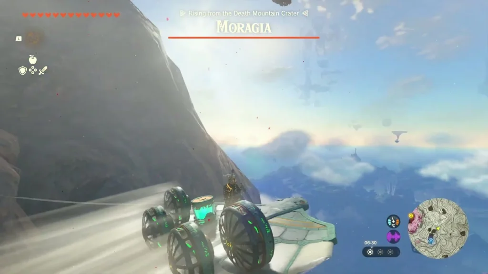
Kích hoạt terminal
- Kích hoạt terminal xanh ở phòng trung tâm → mở bản đồ + đánh dấu 5 gong (1F, 2F, 3F hub, 4F, 5F).
5 Gongs
Gong 1: Phòng phía nam (1F)
Vượt lava: nhảy các phiến đá; với bể rộng hơn dùng Hydrant tạo phiến đá. Minecart + fan; công tắc hình chuông chuyển hướng đường bằng Yunobo. Cầu lava: Hydrant tạo phiến đá, nối bằng Ultrahand → cầu. Đưa Yunobo qua barrier Marbled Rock → gong. Đánh bại Fire Like (rương Zonaite Shield). Rương Diamond trên bệ nâng.
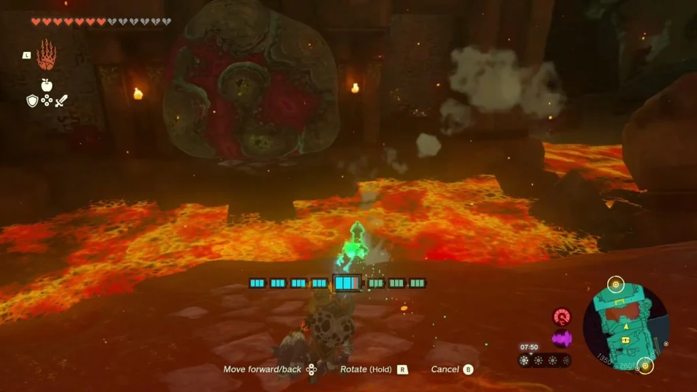
Gong 2: Phòng phía tây (2F)
Đi ray phía bắc đến 2F (chuông xoay xe, Yunobo phá đá). Xoay xe, công tắc hình mũi tên chuyển hướng. Vượt phòng lava: đặt xe goòng trên ray thấp, đi vào phòng phía tây. Phá boulder Marbled Rock trong bể lava → Hydrant nước tạo phiến đá. Bước lên phiến động + Recall → đi qua. Đánh bại Construct, đánh gong Yunobo. Rương: Zonaite x3 (Ascend qua grate), 10 mũi tên.
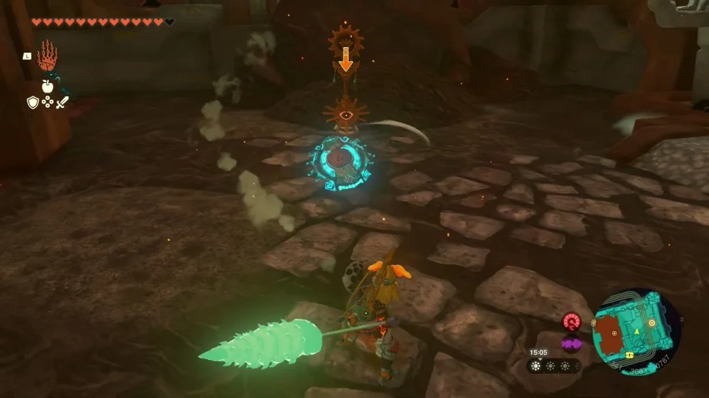
Gong 3: Phòng tây nam (5F)
3F hub → ray bị gãy tây nam. Gắn Zonai Rocket vào xe goòng → đi qua khe đến 4F. Sửa cầu (Ultrahand nối tấm). Kiểm tra sau cầu rương Ruby. Nhắm Yunobo lên cầu vào boulder Marbled Rock → mở lỗ + rơi khối đá. Recall khối → đi lên đến 5F. Gong trong phòng phía nam → đánh Yunobo.
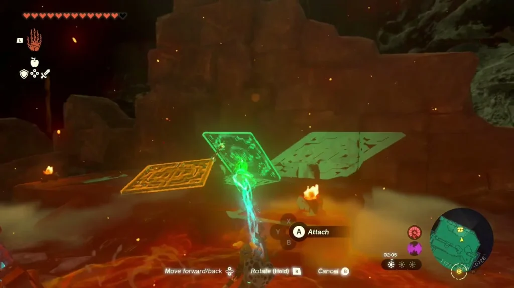
Gong 4: Phòng phía bắc (4F)
Quay về 3F hub. Dùng ray bị gãy đông bắc. Đi xe, bắn chuông mũi tên để nâng ray → lên phòng trung tâm trên 3F (hub). Từ hub, đường lên các tầng trên. Gong 4 ở phòng phía bắc 4F (xem walkthrough).
Gong 5: Phòng phía bắc (1F)
Đường từ hub xuống phòng phía bắc 1F; đánh gong Yunobo.
Boss: Marbled Gohma
- Fuse đá vào mũi tên bắn mắt khi mở.
- Khi hạ xuống, đánh chân.
- Né đá rơi.
- Phần thưởng: Heart Container + Vow of Yunobo (Fire). Dọn nguy hiểm Eldin.
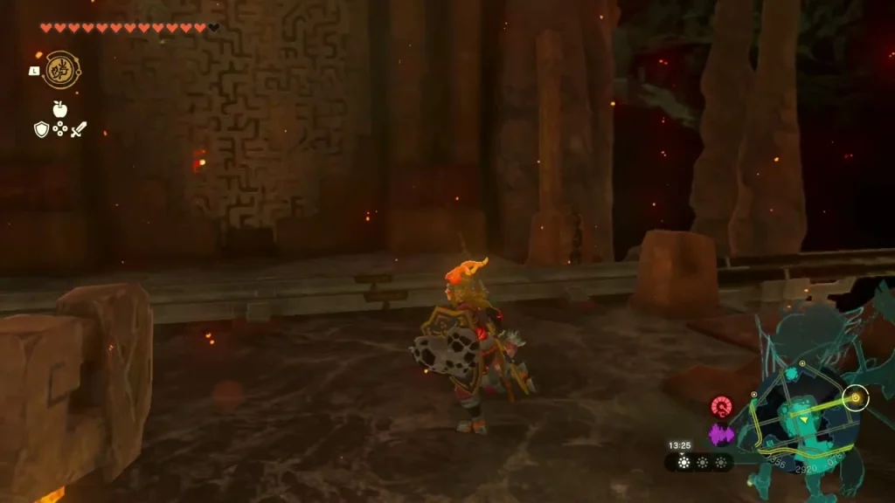
Hướng dẫn đầy đủ + ảnh (Zelda Central)
💧 Water Temple (Zora) – Boss: Mucktorok
Vùng: Lanayru. Nhiệm vụ: Sidon of the Zora. Mảnh Zora Armor hữu ích (bơi ngược thác).
Đến temple
- Theo đường: Yona, Jiahto, Sidon → King Dorephan, Floating Scales Island, Ancient Zora Waterworks → nâng nước → thác mở đường đến Wellspring Island.
- Wellspring Island trọng lực thấp: nhảy cao, rơi chậm; dùng bong bóng nước làm lift; Recall bong bóng để đi lên lại.
- Theo đường qua Wellspring Island, leo thác. Dùng Wing + thiết bị Zonai vượt đến Sidon. Đánh bại Construct, bơi ngược thác, kích hoạt điểm du lịch.
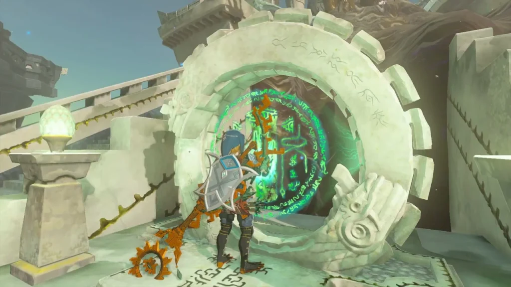
4 Vòi nước
Vòi 1: B1 sau lửa
Lướt xuống lối vào basement. Shield của Sidon qua tia lửa. Nếu Sidon kẹt ngoài, dùng Hover Stone giữ công tắc sàn → tắt lửa → Sidon theo. Lướt qua hố gai đến bi đá. Gắn bi vào Hover Stone, mang qua khe. Đặt vào ổ trên tường xa, kích hoạt Hover Stone → bi giữ. Cửa mở → sóng nước của Sidon vào vòi.
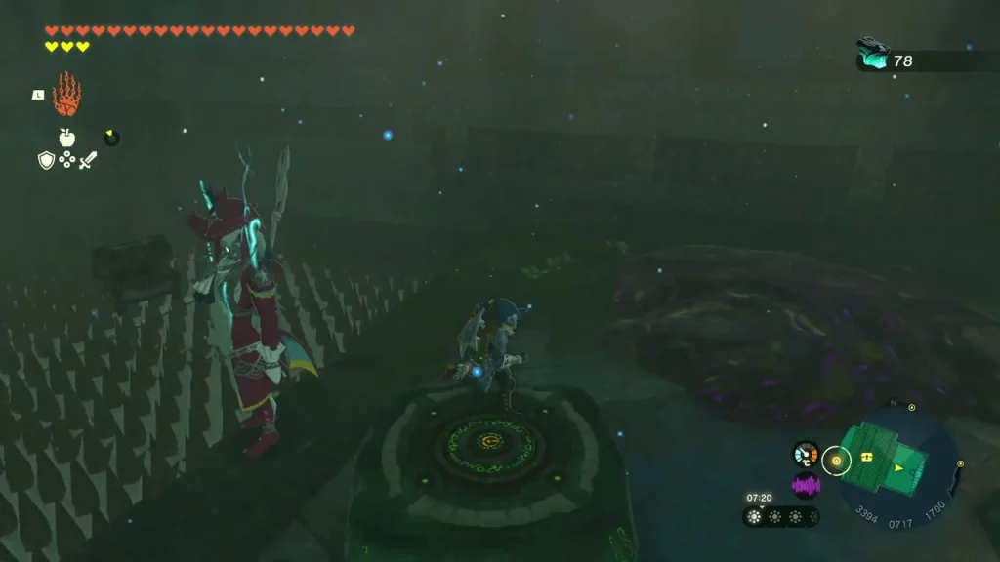
Vòi 2: bên trái bong bóng nâng
Vượt nền nổi đến đảo dưới trái. Dọn sludge khỏi bộ phát bong bóng. Đặt bi đá vào bong bóng → đi bong bóng thứ hai lên. Nâng cổng bằng Ultrahand, ghim mở bằng Hover Stone → nước thoát, bi rơi vào ổ → cửa mở → sóng nước Sidon.
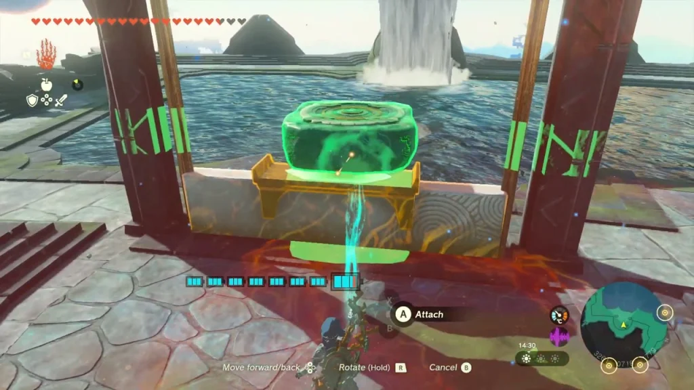
Vòi 3: dưới phải tháp quay
Dọn sludge khỏi thác, bơi ngược lên. Đánh bại Fire Like (rương). Công tắc trong tháp quay phủ sludge: bắn mũi tên nước qua lối mở để làm sạch, sau đó bắn công tắc lộ ra. Đi qua cổng → kích hoạt vòi Sidon.
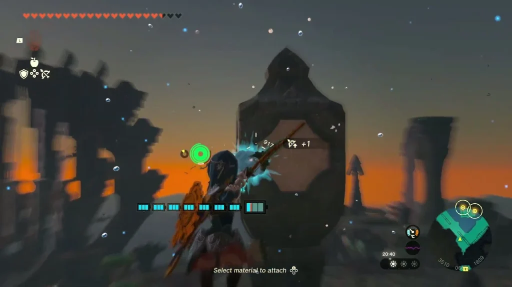
Vòi 4: trên phải sửa bánh xe
Bong bóng nước + Recall lên đảo trên phải. Bánh xe nước thiếu mái chèo → gắn phiến đá để kéo dài. Di chuyển bong bóng nước vào khe giữa các tiếp điểm điện → mang dòng điện → cổng mở. Kích hoạt vòi cuối Sidon → quay về bệ trung tâm.
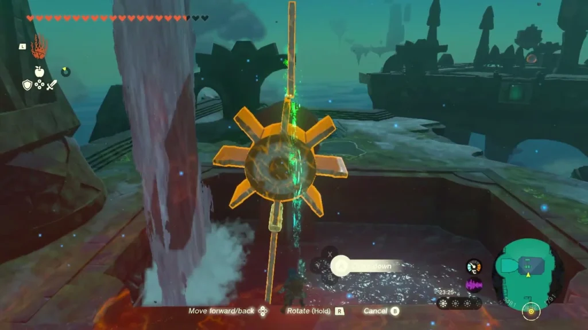
Boss: Mucktorok
- Rửa cá mập sludge bằng sóng nước Sidon / Splash Fruit / mũi tên nước. Có thể cần nhiều hit.
- Lộ ra: làm choáng bằng mũi tên trước khi nó lặn lại.
- Tấn công bằng vũ khí mạnh nhất khi choáng; lùi khi di chuyển.
- Ở nửa máu: rải sludge; dùng sóng Sidon để xóa không gian; tấn công nước lộ ra lại; mũi tên Keese Eyeball khi ngoài tầm.
- Hydrants quanh bệ dọn sludge.
- Phần thưởng: Heart Container + Vow of Sidon (Water). Dọn sludge Zora's Domain.

Hướng dẫn đầy đủ + ảnh (Zelda Central)
⚡ Lightning Temple (Gerudo) – Boss: Queen Gibdo
Vùng: Gerudo. Nhiệm vụ: Riju of Gerudo Town. Cần kháng nóng ban ngày + kháng điện (giáp Rubber).
Giải câu đố ánh sáng 3 trụ
- Trụ 1: leo lên đỉnh, phá sàn nứt → nguồn sáng. Dùng gương gửi chùm sáng đến trụ tiếp.
- Trụ 2: chùm sáng đến tháp nhỏ hơn; leo, xoay bánh xe ngược chiều kim đồng hồ cho đến khi trụ phản chiếu chùm sáng tiếp.
- Trụ 3: phá sàn nứt, uncover parts. Dùng que + nền nổi sửa bánh xe. Xoay cho đến khi gương gửi chùm sáng về trụ 1. Tam giác hình thành → bàn thờ lộ → nâng temple.
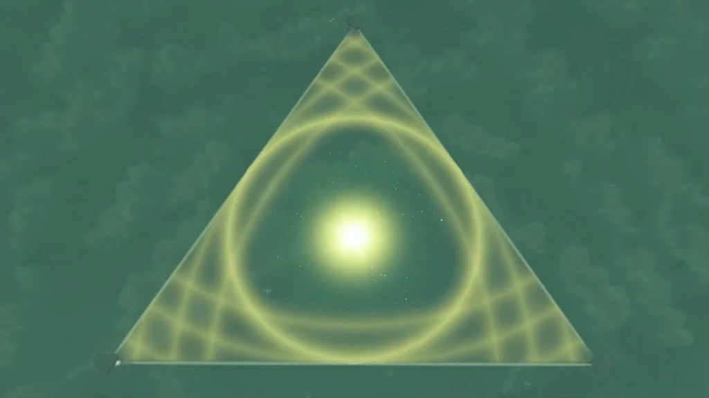
Đuổi Queen Gibdo khỏi lối vào
- Dùng sét Riju trên tổ tím phía trên cửa. Queen Gibdo xuất hiện. Giữ di chuyển (charge, lốc cát). Khi trường Riju sẵn sàng, hút năng lượng, bắn mũi tên vào Queen trong trường → lột giáp. Tấn công vài đòn, rút lui, lặp lại. Cô rút lui.
- Dùng sét Riju trên tổ chặn lối vào → phá → vào.
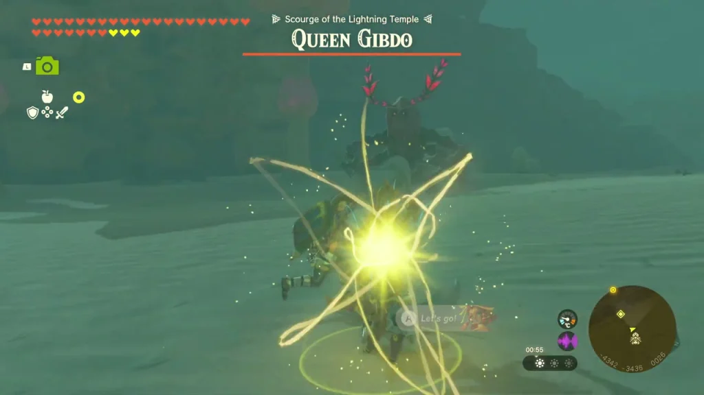
Đến Room of Ascension
- Phòng vào: nhặt Korok-Frond Guster, vung để thổi cát khỏi công tắc sàn gần cửa xa.
- B1: sàn sập, tia lửa, cầu lửa lăn. Ascend nếu rơi. Xem tia, vượt khi tạm dừng. Bước công tắc để Riju theo. Recall cầu lửa lăn lên dốc → chạy đến công tắc tiếp.
- Phòng tiếp: đánh bại Construct, dọn cát phát hiện gương. Giữ gương trong chùm sáng, góc phản chiếu đến công tắc vàng phía trên cửa khóa. Đi qua, leo đến Room of Ascension. Kích hoạt terminal → điểm du lịch + đánh dấu 4 pin.
Sạc 4 pin
Pin 1: phòng ẩn cạnh terminal
Sau terminal: 2 khối sandstone lỏng trong tường. Di chuyển bằng Ultrahand, đi qua. Sét Riju + mũi tên sạc pin.
Mở Room of Natural Light
Góc 1F: nâng đá chặn luồng khí. Đi gió lên 5F, vào lối mở nơi chùm sáng chiếu xuống. Dựng đá thẳng trong chùm sáng, đặt gương lên trên, góc ánh sáng qua lối mở vào phòng trung tâm. Trên 5F trượt các cột gương cho đến khi chùm sáng đến NE rồi xuống các tầng dưới → mở lối 3F.
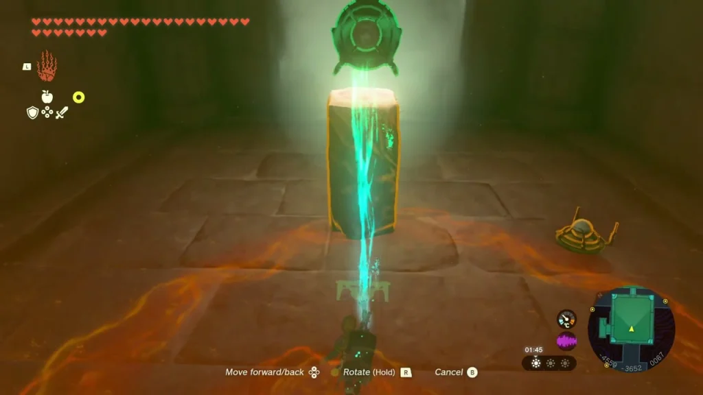
Room of Offered Light
Lướt xuống cửa 3F, bước công tắc. Đánh bại Gibdos/Constructs. Xây bệ từ grate + hot-air balloon. Gắn gương hướng về tường bị chặn. Đặt bệ trên chùm sáng. Đốt đuốc/vũ khí gỗ, giữ dưới balloon → bệ nâng, gương phản chiếu ánh sáng đến công tắc cao → cửa mở. Rơi xuống, sạc pin.
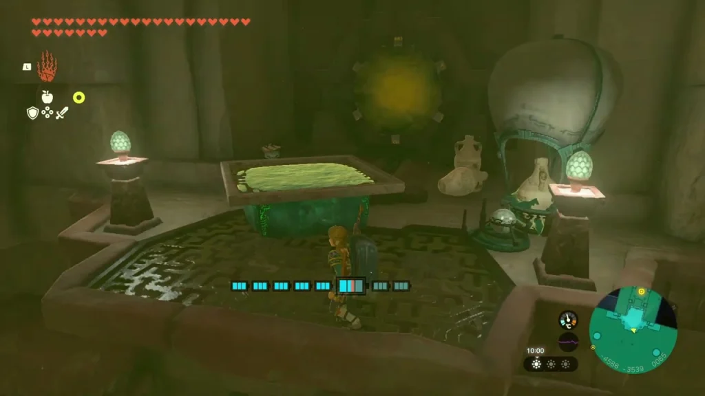
Vượt giếng lửa
Quay về cột gương 5F. Chuyển chùm sáng đến cột xa, dọn cát, trượt vào vị trí. Điều chỉnh gương tiếp gửi chùm sáng lên 6F. Đi gió đến công tắc → mở phòng. Lướt xuống giếng né giữa các tia lửa. Đáy: công tắc sàn mở cửa. Đánh bại 2 Constructs, cho Riju vào, sạc pin.
Room of Light and Shade
Đi gió lên 4F. Lối mở phía bắc phòng trung tâm (~-4513,-3585,0063). Đánh bại Construct, qua 2 đĩa đá quay. Di chuyển khối khỏi nguồn sáng. Recall đĩa cho đến khi khe thẳng hàng → ánh sáng đi qua đến công tắc bên kia phòng trung tâm. Lướt, bước công tắc → mở đường. Bẫy gai: dùng khối đá giữ bẫy mở; bước công tắc sàn để Riju theo. Trong Room of Light and Shade: đánh bại Construct, phát hiện gương trong cát. Rơi qua lối mở đến phòng quay bên dưới. Dùng gương hướng ánh sáng đến mục tiêu xanh; phòng quay → đóng Stake vào tường để dừng quay. Chùm sáng trúng mục tiêu → quay lên, theo đường đến pin cuối, sạc bằng Riju.
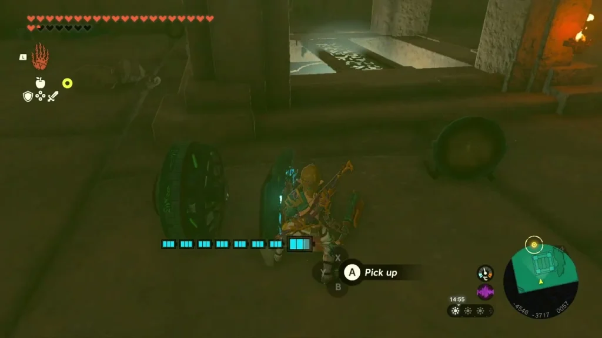
Kích hoạt thang máy & Boss: Queen Gibdo
- Quay về Room of Ascension, dùng terminal. Đi thang máy đến 7F. Chuẩn bị hồi máu, vũ khí mạnh, mũi tên với Bomb Flowers/elemental.
- Chỉ bị thương sau khi bị elemental đánh (sét Riju đáng tin; mũi tên elemental cũng được). Giữ di chuyển (charge, lốc cát).
- Khi tái nhợt, tấn công bằng vũ khí/mũi tên mạnh nhất. Ở nửa máu: 5 lốc xoáy + 4 tổ triệu hồi Gibdos. Phá tổ bằng sét Riju/mũi tên Bomb Flower → ánh sáng mặt trời vào, Gibdos mất giáp. Kết liễu Queen.
- Phần thưởng: Heart Container + Vow of Riju (Lightning). Dọn bão cát Gerudo.

Hướng dẫn đầy đủ + ảnh (Zelda Central)
🤖 Spirit Temple (Depths) – Boss: Seized Construct
Nhiệm vụ: Guidance from Ages Past / Find the Fifth Sage. Hoàn thành Find the Fifth Sage trước. Mang spare Zonai Charges/Energy Cells.
Đi Construct đến temple
- Sau khi lắp 4 phần ở Construct Factory, leo lên, theo waypoint vàng SE. Kích hoạt Sitoju Lightroot. Phá tường đá bằng đấm. Tạm dừng khi battery thấp (nạp lại). Gần temple có ledge dốc: dùng Rockets từ armory, gắn vào lưng, fire boost lên.
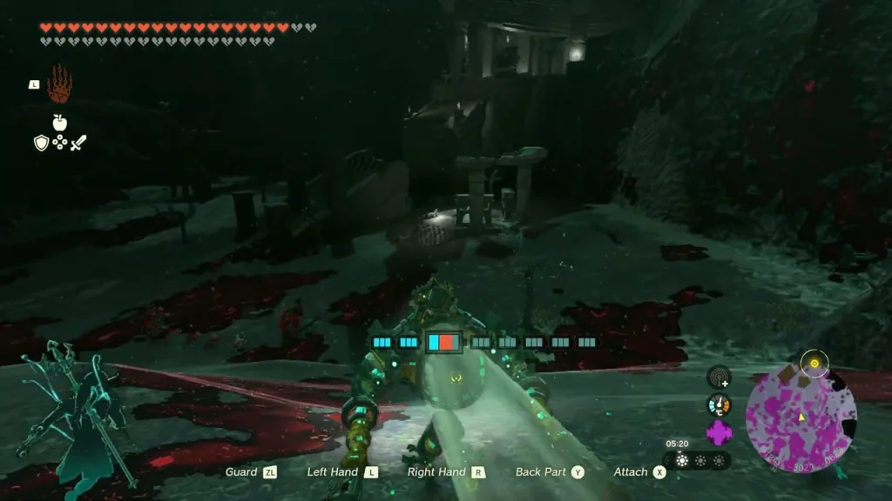
Đánh thức tượng cú & xuống
- Tương tác tượng cú khi cưỡi Construct → mask kích hoạt thang máy. Đi xuống, vượt sàn gloom đến boss arena. Kích hoạt tượng mở điểm du lịch.
Boss: Seized Construct
- Pha 1: Chặn (ZL) đòn báo trước. Phản công bằng đòn ngắn → ném nó về sau. Spiked Balls quanh arena; Cannon/Shock Emitter trên tay làm choáng. Nhắm cannon shot vào rương (giữ ~1s). Đẩy vào dây điện để sát thương nặng + choáng.
- Pha 2 (~nửa máu): mọc 2 tay thêm, rocket, bay. Cannon shot làm rơi; né charge → kẹt trên sàn ngắn. Chặn/phản công khi quay lại. Đẩy vào dây. Thiết bị rơi từ capsule; fuse để tăng tầm.
- Phần thưởng: Heart Container + Secret Stone của Mineru → Vow of Mineru (Spirit). Trail of Master Sword bắt đầu.
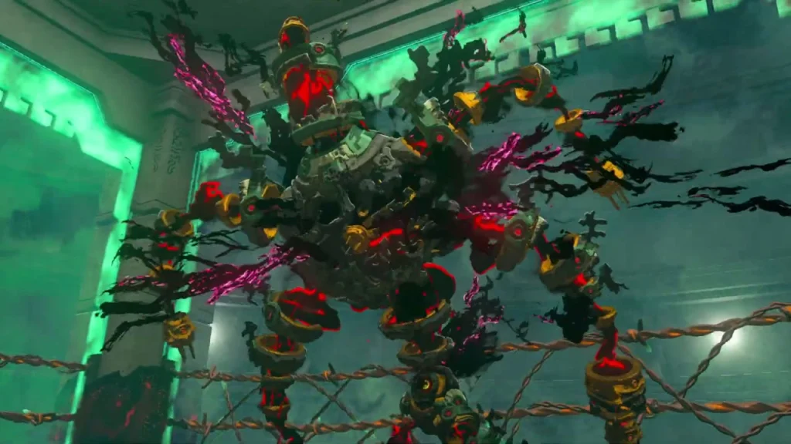
Hướng dẫn đầy đủ + ảnh (Zelda Central)
🏰 Hyrule Castle – Phantom Ganon
Nhiệm vụ: Trail of the Master Sword.
- Theo nhiệm vụ Trail of the Master Sword: vào Korok Forest qua Depths (Lost Woods).
- Đánh Phantom Ganon.
- Đỡ đòn; dùng mũi tên ánh sáng.
- Nhận Heart Container.
Hướng dẫn đầy đủ (Zelda Central)